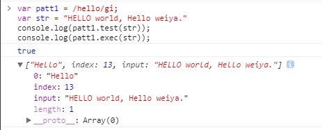
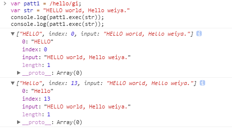
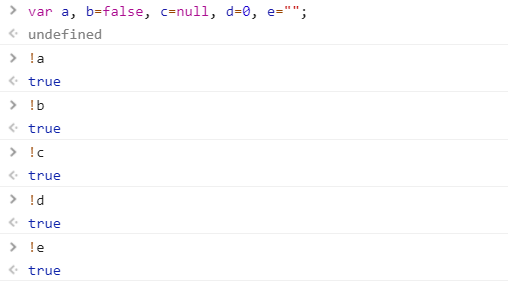

JavaScript相关¶
JavaScript是Web的编程语言。
JavaScript 与 Java 是两种完全不同的语言，无论在概念上还是设计上。 Java（由 Sun 发明）是更复杂的编程语言。
ECMA-262 是 JavaScript 标准的官方名称。
JavaScript 由 Brendan Eich 发明。它于 1995 年出现在 Netscape 中（该浏览器已停止更新），并于 1997 年被 ECMA（一个标准协会）采纳。
Note
JavaScript 是脚本语言。浏览器会在读取代码时，逐行地执行脚本代码。而对于传统编程来说，会在执行前对所有代码进行编译。
一些术语¶
- DOM: Document Object Model(文档对象模型) 是用于访问 HTML 元素的正式 W3C 标准。
js输出数据的方式¶
window.alert()document.write()innerHTMLconsole.log()
js script中的async¶
JS放在head和放在body中的区别¶
百度站长自动推送¶
1 2 3 4 5 6 7 8 9 10 11 12 | |
当 curProtocol === 'https'，其 push.js 为
1 2 3 4 5 6 7 8 9 10 11 | |
匿名函数¶
首先，这是一个匿名函数，可以参考js匿名函数。
参考的博客里面总结到，有三种使用匿名函数的方式
- 声明匿名函数，直接赋值给某一个事件
window.onload = function(){
alert(123);
}
- 使用匿名函数表达式，将匿名函数赋值给某个变量
var func = function(){
alert(123);
}
func();
- 自执行函数
a) 使用!开头
!function(){
alert(123);
}();
b) 使用()将函数及函数后的括号包裹
(function(){
alert(123);
}());
c) 使用()包裹函数值
(function(){
alert(123);
})();
百度站长采用的是c)。
浏览器对象模型(Browser Object Model (BOM))¶
上述代码中涉及到window.location，而window.location属于BOM，一般用于获得当前页面的地址 (URL)，并把浏览器重定向到新的页面。参考JavaScript Window Location
- location.hostname 返回 web 主机的域名
- location.pathname 返回当前页面的路径和文件名
- location.port 返回 web 主机的端口 （80 或 443）
- location.protocol 返回所使用的 web 协议（http:// 或 https://）
字符串处理¶
insertBefore()¶
正则表达式¶
定义一个RegExp对象如下
var patt=new RegExp(pattern,modifiers);
// or more directly
var patt=/pattern/modifiers;
其中有两种修饰器
- i: 用来执行不区分大小写的匹配
- g: 用于执行全文的搜索（而不是在找到第一个就停止查找,而是找到所有的匹配）
test()方法搜索，根据结果返回true或false;
exec()方法返回匹配的结果，但其跟是否全局匹配有很多关系，具体参考js正则表达式之exec方法讲解。在全局匹配下，这个机制通过lastIndex实现，用于规定下次匹配起始位置，参考JavaScript lastIndex 属性。
如
var patt1 = /hello/gi;
var str = "HELLO world, Hello weiya."
console.log(patt1.test(str));
// match the second one, because the lastIndex skip the first one.
console.log(patt1.exec(str));

var patt1 = /hello/gi;
var str = "HELLO world, Hello weiya."
console.log(patt1.exec(str));
console.log(patt1.exec(str));

HTML DOM Document 对象¶
本例中，document.referrer用来返回载入当前文档的文档的 URL。
Remove Disqus Ads¶
Info
Original records on the usage: remove ads #7
1 2 3 4 5 6 7 8 9 10 11 12 13 14 | |
命令行压缩js¶
参考command line - Minify tool that can be executed through terminal - Ask Ubuntu
sudo apt-get install yui-compressor
yui-compressor myfile.js > myfile.min.js
双感叹号¶
参考JavaScript中双叹号(!!)作用示例介绍_javascript技巧_脚本之家
举个例子
var a;
var b=!!a;
a默认是undefined。!a为true，!!a则为false。
!!一般用来将后面的表达式强制转换为布尔类型的数据。
因为JavaScript是弱类型的语言（变量没有固定的数据类型），所以有时需要强制转换为相应的类型，如
a=parseInt(“1234″)
a=”1234″-0 //转换为数字
b=1234+”” //转换为字符串
c=someObject.toString() //将对象转换为字符串
其中第1种、第4种为显式转换，2、3为隐式转换
布尔类型的转换¶

setTimeout 返回值¶
箭头函数¶
MathJax¶
- MathJax basic tutorial and quick reference
- 注意在 mathjax 中小于号左右空一格，不要连着写